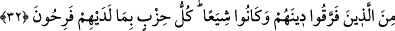
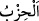

“Namazı kasden terk eden inkâr etmiş olur.”[36] hadisinin Kur’andan bir âyet ile
uygunluğunu bulmak istedim. Kırk yıl düşündüm. Nihâyet “namazı kılın; müşriklerden
olmayın.” âyetini buldum.
32. Dinlerini parçalayan ve bölük bölük olanlardan (olmayın. Bunlardan) her
fırka, kendilerinde olan ile böbürlenmektedir.
“Dinlerini parçalayan” Onların dinlerini parçalamaları, nefsânî istek ve
arzularındaki farklılığa göre ibâdet ettikleri şeylerde ayrılığa düşmeleridir. Bu ifâdenin
önceki âyetteki müşriklerden bedel yapılmasının faydası, müşriklerin hepsinin apaçık
dalâlette olduğunu açıklayarak onların bölüklerinden herhangi birine mensup olmaktan
sakındırmadır. “Ve bölük bölük olanlardan” yâni herbiri dininin temelini atan önündeki
fırkanın izini takip eden muhtelif fırkalardan olmayın.
“(Bunlardan) her fırka,” topluluk “kendilerinde olan” sapıklık ve bâtıl iddiâ üzerine
kurulmuş çarpık din “ile böbürlenmektedir.” Onun hak olduğunu zannederek
sevinmektedir. Onlar nerede, dinlerinin hak olması nerede!
el-Kâmûs’ta “
” insanlar topluluğudur.” der.
Herkesin işi kendine değerlidir,
Bundan da mutludur ve gönlü hoştur.
İster manastır önderi olsun isterse kilisenin pîri,
Kendisini tasdik eder, gayrını inkâr.
Bilesin ki ümmetlere ve asırlara nisbetle şerîatlar ve hükümler değişmiş olsa da
Âdem (a.s.)’dan günümüze kadar Allah katında din İslam’dır. İnsanlar tek bir ümmetti.
Sonra yahûdî, hristiyan, mecûsî, puta, krala, yıldızlara ve benzerlerine tapanlar olarak
çeşitli fırkalar hâline geldiler.
Rivâyet edilmiştir ki İbrahim (a.s.)’ın ümmeti kedisinden sonra yetmiş fırkaya ayrıldı.
Biri hariç onların hepsi cehennemdedir. O bir fırka, usûl ve furû‘da İbrahim (a.s.)’ın
bulunduğu hal üzere olanlardır. Mûsâ (a.s.)’ın ümmeti kendisinden sonra yetmiş bir
fırka oldu. Mûsâ (a.s.)’ın îtikadı ve ameli üzere olan bir fırka dışında hepsi
cehennemdedir. Îsâ (a.s.)’ın ümmeti kendisinden sonra yetmiş iki fırka oldu. Îtikadında
ve amelinde ona uygun olan bir fırka dışında hepsi cehennemdedir. Muhammed (a.s.)’ın
ümmeti de kendisinden sonra yetmiş üç fırka oldu. Bir fırka dışında onların hepsi
cehennemdedir. O bir fırka ise Rasûlullah (s.a.)’in ve ashabının bulunduğu yolda
olanlardır. Onlar fırka-i nâciye/kurtuluşa eren fırkadır. Bu dalâlette olan fırkalar küllî
fırkalardır. Yoksa yoldan çıkmış mezheblerin cüz’iyyâtı sayılamayacak kadar çoktur.